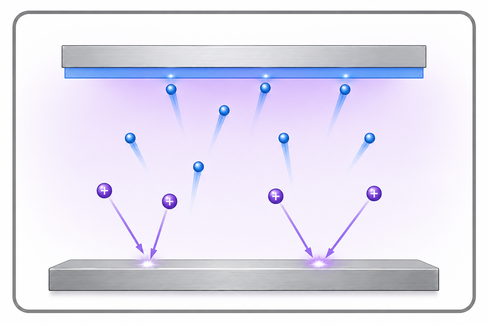
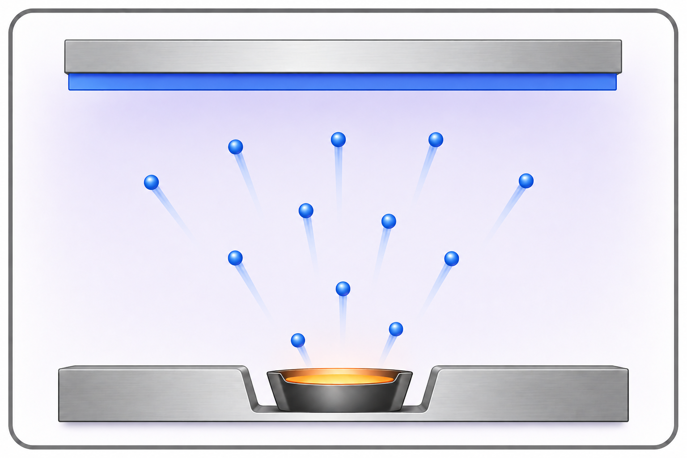
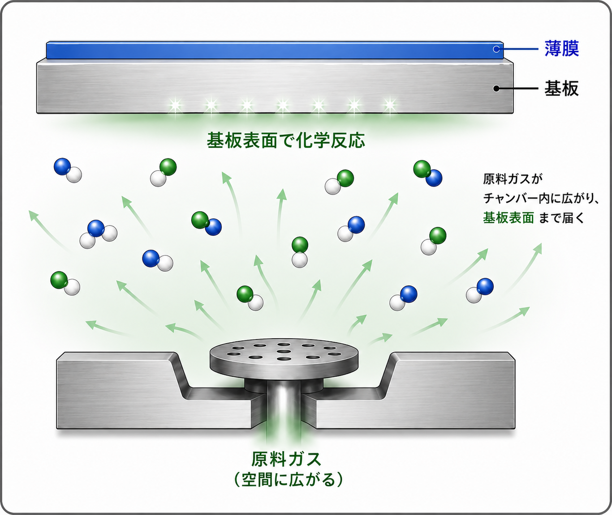

PVD
スパッタリング
イオンをぶつけて、材料を飛ばす
アルゴンイオンを材料（ターゲット）にぶつけ、飛び出した材料の原子を基板に付着させて薄膜をつくります。

薄膜のつくり方は一つではありません。膜の材料や必要な性能などに合わせて、いくつかの方法を使い分けます。
イオンをぶつけて、材料を飛ばす
アルゴンイオンを材料（ターゲット）にぶつけ、飛び出した材料の原子を基板に付着させて薄膜をつくります。

材料を加熱して、蒸発させる
真空中で材料を加熱し、蒸発した材料を基板に付着させて薄膜をつくります。

原料ガスを、基板表面で化学反応させる
原料ガスを基板表面で化学反応させ、薄膜をつくる方法です。
